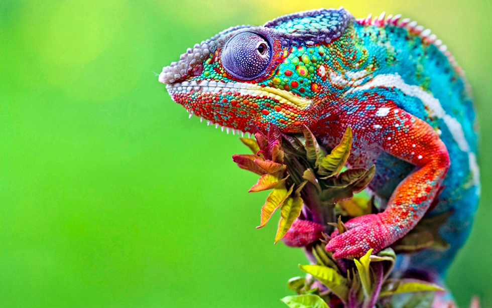

Camaleones (Chamaeleonidae)

es un pequeño reptil que pertenece a la familia Chamaeleonidae, de la cual obtiene el mismo nombre científico. Son aproximadamente 160 especies de lagartos miembros del orden Squamata, del suborden Lacertilia, del infraorden Iguania y de la familia Chamaeleonidae. Son conocidos por sus cambios de color, que incluyen una variada gama de los colores menos imaginados.
Mayoritariamente los camaleones viven en: Isla de Madagascar, España, Portugal, Sri Lanka, Sur de la India, Medio Oriente, Algunas islas del oeste del océano Índico Algunas especies viven ahora en Hawái, California y Florida en los Estados Unidos, ya que fueron introducidas. Viven en ambientes forestales, es decir, en todo tipo de bosques tropicales y de montaña, selvas, sabanas y ocasionalmente estepas y desiertos.
Los camaleones son animales carnívoros y aunque su dieta está basada primordialmente en insectos, las especies de mayor tamaño pueden consumir presas un poco más grandes como aves y lagartos. Otras también gustan de un poco de materia vegetal. En general, sus presas favoritas incluyen saltamontes, grillos, insectos palo, mantis y langostas. Verlos comer es todo un espectáculo, siempre y cuando se ponga mucha atención por la rapidez del acto.